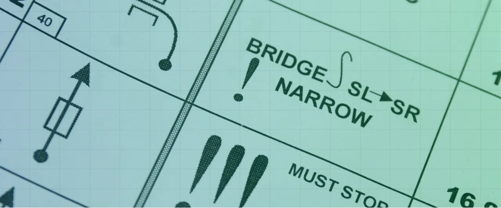
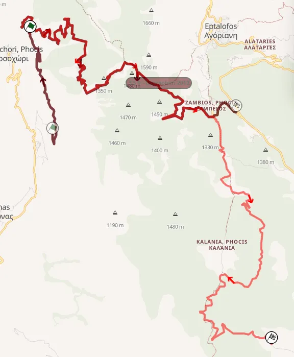
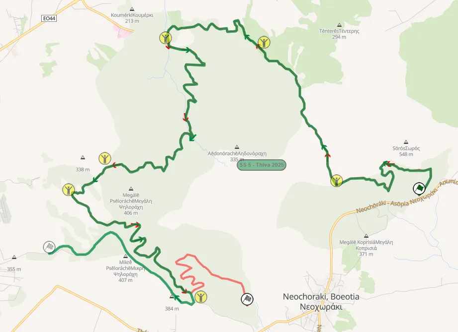
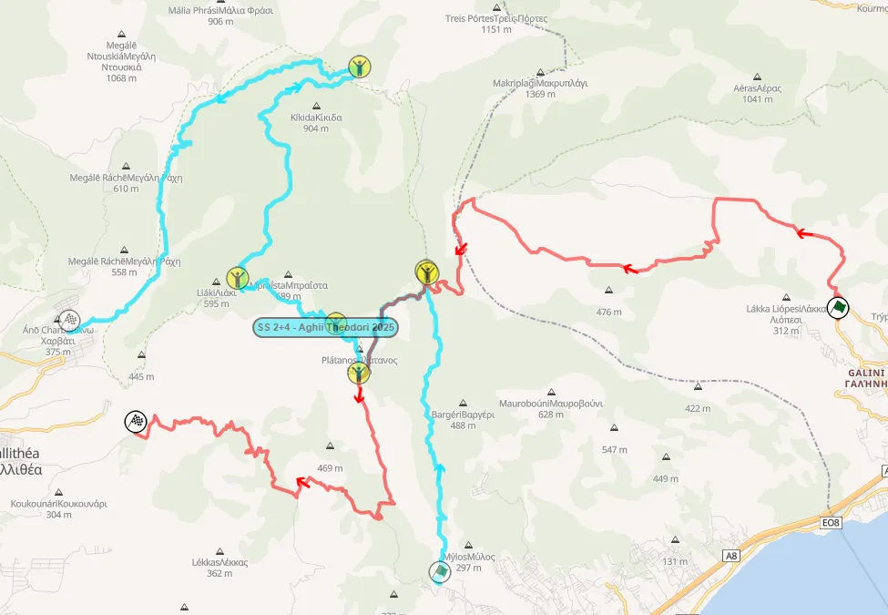
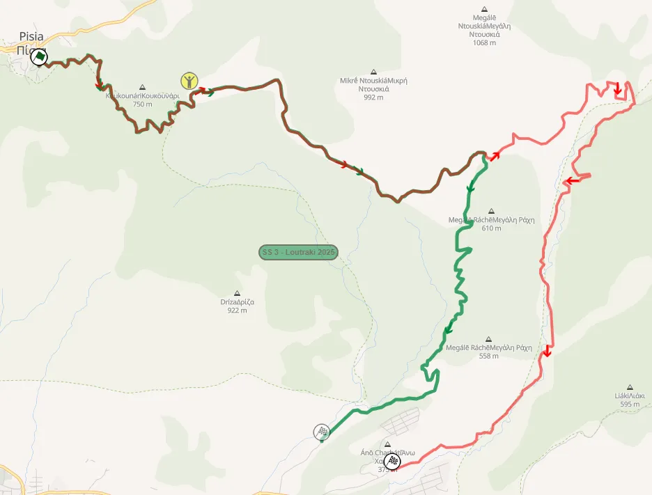

Η διαδρομή του 70ου ΕΚΟ Ράλλυ Ακρόπολις
Thumbnail: @ World
Maps from: Rally-maps.com
Το ωράριο του 70ου ΕΚΟ Ράλλυ Ακρόπολις δημοσιεύθηκε σήμερα από τους διοργανωτές του εθνικού μας αγώνα και αποτελείται από 17 ειδικές διαδρομές, συμπεριλαμβανομένου μιας υπερειδικής διαδρομής στην Αθήνα.
Δεδομένου ότι ο αγώνας για φέτος έχει κέντρο το Λουτράκι, και όχι την Λαμία, που ήταν η πόλη που φιλοξενούσε τον αγώνα από το 2021, από την χρονιά δηλαδή που το Ακρόπολις επέστρεψε στο καλεντάρι του Παγκόσμιου Πρωταθλήματος, υπάρχουν πολλές αλλαγές. Η μεγάλη πρωτοτυπία της διοργάνωσης για φέτος είναι η χρήση ferry boat για την μεταφορά των πληρωμάτων από την Κόρινθο στην Ιτέα την Πέμπτη το βράδυ, για μείωση των "απλών" διαδρομών του αγώνα. Αυτό είχε γίνει τελευταία φορά το 1991, όταν το Ακρόπολις είχε ένα λουπ σε Κορινθία και Αργολίδα, με τα αυτοκίνητα να πηγαίνουν με το πλοίο στην Ιτέα, πριν από το Parc Ferme στην Ερατεινή.
Ας δούμε λοιπόν τις διαδρομές του αγώνα βάσει του ωραριού και τους (περιγραφικούς) χάρτες που παρουσιάστηκαν κατά το teaser του αγώνα.
Για την Πέμπτη, την πρώτη ημέρα του αγώνα, γνωρίζουμε μόνο ότι θα υπάρξει ένα Shakedown 3.34 χιλιομέτρων στο Λουτράκι, καθώς και υπερειδική στην Αθήνα. Για το Shakedown, εικάζω ότι θα είναι εκεί που ήταν και αυτό του 2013, στην τοποθεσία Καλλιθέα. Ίσως η χάραξη ή η φορά να παρουσιάζουν διαφορές, καθώς η ειδική έχει καεί από πυρκαγιές το 2023. Παρόλα αυτά, έχει χρησιμοποιηθεί σε τεστ ομάδων πριν τον αγώνα, με πρόσφατο παράδειγμα την Hyundai με τον Thierry Neuville το 2025.
H Παρασκευή είναι η μεγαλύτερη ημέρα του αγώνα με 137 αγωνιστικά χιλιόμετρα. Τα πληρώματα θα έχουν μια μικρή απλή από την Ιτέα στους SS2 Βωξίτες. Η κλασική αυτή διαδρομή χρησιμοποιείται με αυτή τη κατεύθυνση για πρώτη φορά από το 2022, με κομμάτια αυτής να είναι στον αγώνα ανάποδα, πέρσι και το 2023.
Συνέχεια έχει η ειδική SS3 Παρνασσός που είναι η μεγαλύτερη του αγώνα στα 30 χιλιόμετρα. Πρόκειται για μια νέα έκδοση της ειδικής Δροσοχώρι, που είχε χρησιμοποιηθεί τελευταία φορά το 2012, με νέο τερματισμό, κοντά στα Καλάνια.

Η SS4/6 Στείρι είναι η μόνη επαναλαμβανόμενη ειδική για την Παρασκευή, και είναι απαράλλακτη σε σχέση με πέρυσι. Ξεκινά από τις ανεμογεννήτριες κοντά στο Δίστομο, και στην συνέχεια ακολουθεί την σκληρή διαδρομή της παλίας ειδικής. O SS5 Ελικώνας δεν είναι τίποτα παρά μια διαφορετική χάραξη της ειδικής Λιβαδειά (Ευαγγελίστρια) από το 2022 και 2023. Η ειδική τώρα ξεκινά στην άσφαλτο, και συνεχίζει στον σκληρό και στενό δρόμο με τα δύο νταμάρια, πριν συνεχίσει στην άσφαλτο από την Αγία Άννα, και μετά στον Ελικώνα.
Η ημέρα τελειώνει με ένα πέρασμα από την SS7 Θήβα, που συνδυάζει κομμάτια από τις εκδόσεις του 2024 και 2025.

Το Σάββατο του 70ου Ράλλυ Ακρόπολις είναι εξ ολοκλήρου στην Πελοπόννησο. Τo SS8/12 Γυμνό επιστρέφει στο πρόγραμμα του αγώνα για πρώτη φορά από το 2013, αυτή την φορά με ανάποδη φορά, με πολλές κατηφορικές φουρκέτες πριν τον τερματισμό. Παλαιότερα, η ειδική αυτή ήταν γνωστή για τον σκληρότατο χαρακτήρα της.
Η Αρκαδία επιστρέφει στο Ακρόπολις για πρώτη φορά μετά το 1985, με δύο ειδικές, η μια εκ των οποίων είναι "διπλή". Η ένταξη αυτών των δύο ειδικών στο πρόγραμμα αυξάνουν κατά πολύ τα χιλιόμετρα του αγώνα, με το απογευματινό λουπ ειδικών του Σαββάτου να επαναλαμβάνει μόνο την ειδική στο Μαίναλο, και το Γυμνό.
Η ειδική SS9 Κολλίνες είναι καινούρια, με κομμάτια της να έχουν χρησιμοποιηθεί μόνο στο Μαύρο Ρόδο του 2007. Είναι αρκετά τεχνική, και χρησιμοποιεί δρόμους εντός του δάσους της Σκυρίτιδας, νότια της Τρίπολης.
Το SS10/13 Μαίναλο είναι ακόμα μία καινούρια ειδική, κοντά στο χιονοδρομικό του ομώνυμου βουνού. Είχε χρησιμοποιηθεί το 2009 για δοκιμές από την Citroen και τον Sebastien Loeb.
Το SS11 Κεφαλάρι είναι παρόμοιο με αυτό του 2013, με αρκετά ωραία κομμάτια και περάσματα από δύο οροπέδια. Μαζί με το Γυμνό, είναι οι μόνες δύο ειδικές της Πελοποννήσου που διατηρούνται από την τελευταία φορά που το Ακρόπολις ήταν στο Λουτράκι.
Η Κυριακή βρίσκεται δίπλα στο κέντρο του αγώνα, χρησιμοποιώντας ειδικές δίπλα στο Λουτράκι. Οι SS14/16 Άγιοι Θεόδωροι βλέπει τον δρόμο της Κινέτας να επιστρέφει στον αγώνα για πρώτη φορά από το 2015, με ένα γρήγορο κομμάτι σε φαρδύ δρόμο, με χασίματα. Στη συνέχεια η ειδική ακολουθεί τον ασφάλτινο δρόμο, και τερματίζει μετά από ένα κομμάτι 9 χιλιομέτρων που είναι αργό και τεχνικό.

Το SS15/17 Λουτράκι είναι η Power Stage του αγώνα και έχει ίδια χάραξη με την ειδική Πίσσια του 2023. Σε σχέση με πέρσι, η ειδική τερματίζει εκεί που τελείωνε η περσινή "Άγιοι Θεόδωροι" με έναν σκληρό και κατηφορικό δρόμο.


Comments